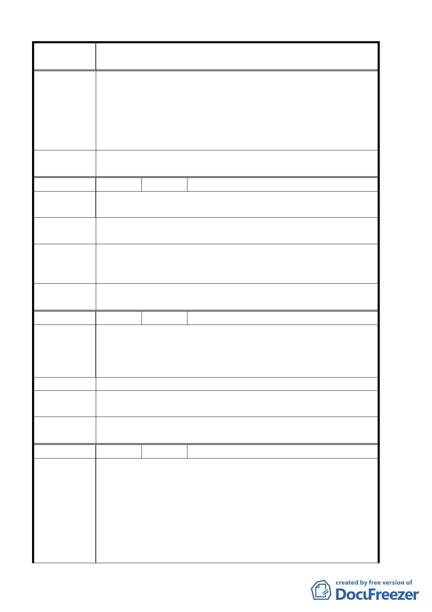

案 名 臺北市北投區都市計畫通盤檢討案（主要計畫）案
街廓變更為「商一（特）」或住宅區，惟應依「都市計畫
工業區檢討變更審議規範」相關規定辦理等細節請發展局
妥為向民眾說明。
二、94.3.3 專案小組第 11 次審查會議：同意發展局建議主要
計畫工業區變更為商業區，該案以另擬細部計畫方式辦
理。
委員會議
決議
同意依專案小組審查結論辦理。
編 號 ２１ 陳情人 川陽郡秀大廈管理委員會
陳情理由
首揭上址道路拓寬致停車場縮小，且右側綠地狹長；若整體規
劃，範圍較廣，更適合民眾休憩使用。
建議辦法
建請將本里天母北路 80 號對面停車場及右側永欣綠地改建為
公園。
專案小組審
查結論
94.5.26 專案小組第 14 次專案審查會議：同意發展局提案，維
持停車場用地，停車場西南角部分土地，配合交通槽化需求，
變更為道路用地。
委員會議
決議
同意依專案小組審查結論辦理。
編 號 ２２ 陳情人 陳津聰
陳情位置：珠海路２２號
陳情理由
本地區於北投溫泉特定專用區內特定觀光商業專用區，依其規
定無法設立安親班、托兒所，但是本地區交通便利鄰近學校，
為設立該類機構最佳地點，商業登記無法進行，致店面均閒置。
建 議 辦 法 請現場了解與重新檢討。
專案小組審
查結論
本案已另行個案變更。
委員會議
決議
同意依專案小組審查結論辦理。
編 號 ２３ 陳情人 陽明大學
一、本校所在之台北盆地東北緣唭哩岸山，環境優美，綠意盎
然，唭哩岸山東北角之「軍艦岩」因具特殊的地質及植物景
觀，聞名遐邇，登山健行之民眾絡繹不絕，故極適合列入北
陳
情
理
由
投區觀光發展景點之一。
二、為確保水土保持以為山坡地與鄰近住戶安全毗鄰本校之臺
北市北投區崇仰段三小段 227-1、227-2、227-9、227-11、
227-12、500、500-1 地號七筆國有土地建議變更為學校用
地
第 16 頁，共 49 頁